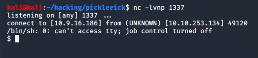
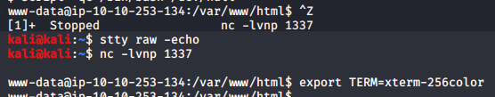
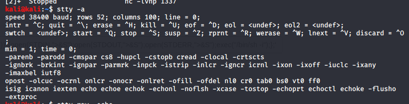

Hello once again! I've seen several guides on how to upgrade an NC shell but I don't think they cover as much as they should. I'll try to be comprehensive and to the point and hope that this will potentially serve as a cheat-sheet. Let's get started.
First you want to have an nc shell ready to be used.
If you've done a lot of CTFs or boxes from services like Try Hack Me or Hack the Box you'll know that an NC shell is extremely limiting, it doesn't have any of the nice features like auto-complete, arrow navigation, command history, nothing.
The logical step after getting a shell is upgrading it to a Fully Interactive TTY and make your life a little better.
The most common way to spawn a tty is with python. However there might be a time where a machine just doesn't have python. What now? Thankfully there's plenty of alternatives. Here's the list.
python3 -c 'import pty;pty.spawn("/bin/bash")'
script -qc /bin/bash /dev/null
echo os.system('/bin/bash')
perl —e 'exec "/bin/sh";'
perl: exec "/bin/sh";
ruby: exec "/bin/sh"
lua: os.execute('/bin/sh')
bash -i
/bin/sh -i(From within IRB)
exec "/bin/sh"(From within vi)
:!bash(From within vi)
:set shell=/bin/bash:shell(From within nmap)
!sh
Great! Now we have a tty but we are not done yet. Now we can make sure the shell stays persistent and insert environmental variables to get our sweet tab auto-complete.
Go ahead and press CTRL-Z to background the shell. This won't turn off the connection.
We're now back in the attacker machine. Now run:
$ stty raw -echo $ fg
Note that "fg" (stands for foreground) won't be displayed when you type it out. Then press ENTER again to get back to the session.
If for some reason that didn't work, like you were using zsh shell using this should work.
$ stty raw -echo; fg
And now the final one.
$ export TERM=xterm-256color
You can easily test if it works when you try to do the "clear" command.
While you're in the attacker machine shell type this command to get info on your shell columns and rows.
$ stty -a
Then when you go back to the shell along with the export TERM command you can do these as well.
$ export SHELL=bash $ export TERM=xterm-256color $ stty rows <num> columns <cols>
Note: I noticed that after using stty raw -echo command the shell gets a lil slow. I don't know what's up with that but in any case, the stty step is optional. So when you get a shell you could skip that process and just use the export TERM command because that's the one that really matters. And also key navigation might just not work depending on the machine. If /bin/sh is the login shell and it's simbolically linked to dash shell you won't get key navigation.
Anyway this is how you do it. Have fun hacking all the things with your newly acquired terminal!